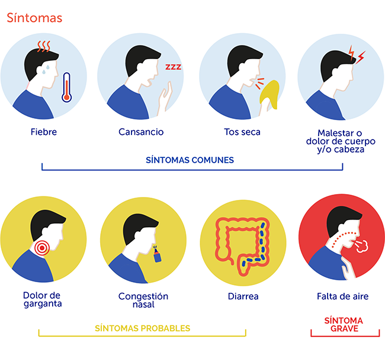
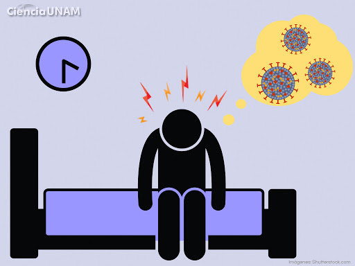
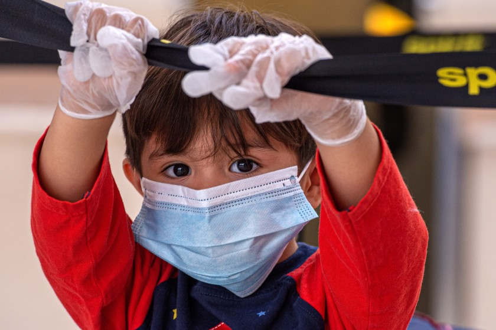

El coronavirus es una extensa familia de virus que puede causar enfermedades tanto en animales como en humanos. En los humanos, se sabe que el coronavirus causa infecciones respiratorias que pueden ir desde el resfriado común hasta enfermedades más graves como el síndrome respiratorio de Oriente Medio (MERS) y el síndrome respiratorio agudo severo (SRAS). El coronavirus que se ha descubierto más recientemente causa la enfermedad por coronavirus COVID-19.

Los síntomas más habituales del COVID-19 son la fiebre, la tos seca y el cansancio. Otros síntomas menos frecuentes que afectan a algunos pacientes son los dolores y molestias, la congestión nasal, el dolor de cabeza, la conjuntivitis, el dolor de garganta, la diarrea, la pérdida del gusto o el olfato y las erupciones cutáneas o cambios de color en los dedos de las manos o los pies. Estos síntomas suelen ser leves y comienzan gradualmente. Algunas de las personas infectadas solo presentan síntomas leves.
Si tiene síntomas leves, como tos o fiebre leves, generalmente no es necesario que busque atención médica. Quédese en casa, aíslese y vigile sus síntomas. Siga las orientaciones nacionales sobre el autoaislamiento. Sin embargo, si vive en una zona con paludismo (malaria) o dengue, es importante que no ignore la fiebre. Busque ayuda médica. Cuando acuda al centro de salud lleve mascarilla, manténgase al menos a un metro de distancia de las demás personas y no toque las superficies con las manos. En caso de que el enfermo sea un niño, ayúdelo a seguir este consejo.
Las investigaciones indican que los niños y los adolescentes tienen las mismas probabilidades de infectarse que cualquier otro grupo de edad y pueden propagar la enfermedad. Las pruebas hasta la fecha sugieren que los niños y los adultos jóvenes tienen menos probabilidades de desarrollar una enfermedad grave, pero con todo se pueden dar casos graves en estos grupos de edad. Los niños y los adultos deben seguir las mismas pautas de cuarentena y aislamiento si existe el riesgo de que hayan estado expuestos o si presentan síntomas. Es particularmente importante que los niños eviten el contacto con personas mayores de edad y con otras personas que corran el riesgo de contraer una enfermedad más grave.
Fuentes: Organización Mundial De La Salud
Click aqui para consejos para prevenir el Covid-19